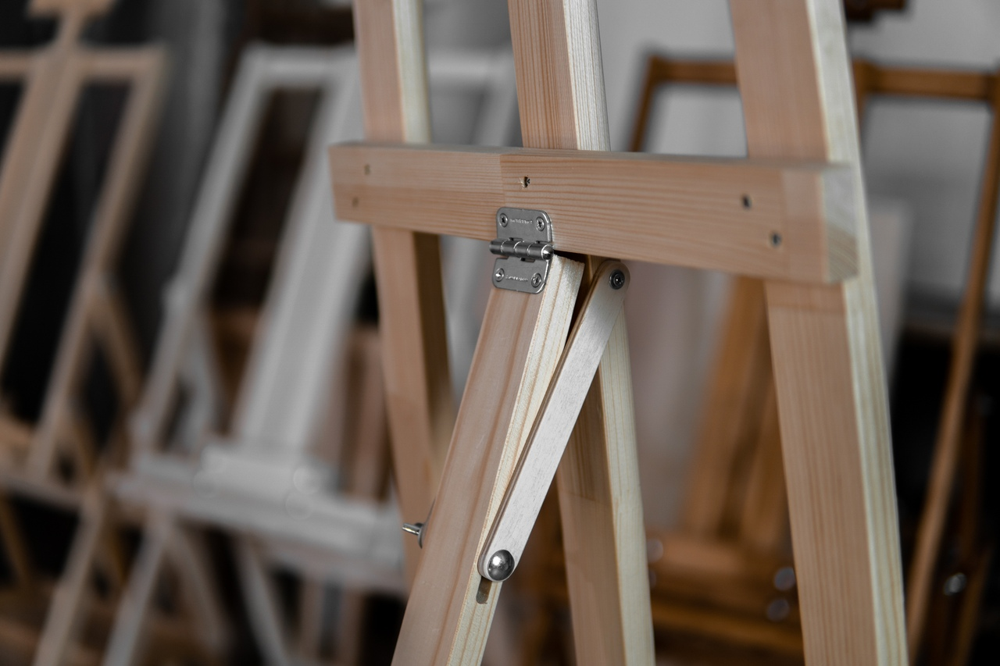
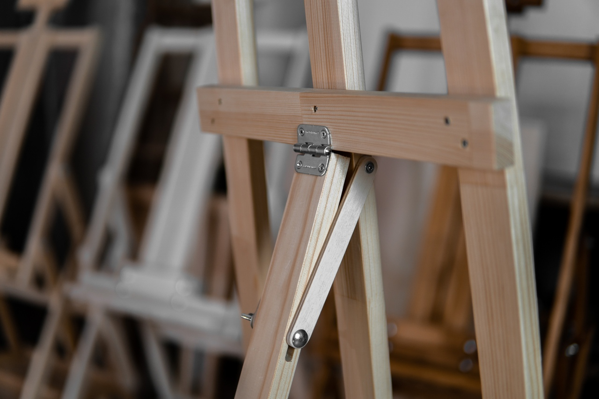

Просто мольберт "лира". Проверен не одним поколением художников.
Самая популярная модель мольбертов. Лира заслужила свою популярность универсальностью и ценой.
Данный мольберт подойдет детям и взрослым, любителям и профессионалам. Эта модель оснащена верхним и нижним бегунками, которые служат для установки и фиксации на мольберте планшета из фанеры либо холста. Планшет необходим в случае, если художник рисует на бумаге, тогда лист крепится на планшет и устанавливается на мольберт. В случае, если художник рисует на холсте - холст устанавливается сразу на мольберт. Высота бегунков задается с помощью 4-х фиксаторов, ослаблять и фиксировать которые можно легко - пальцами рук. Угол наклона задней ноги также фиксируется с помощью гайки-барашка.